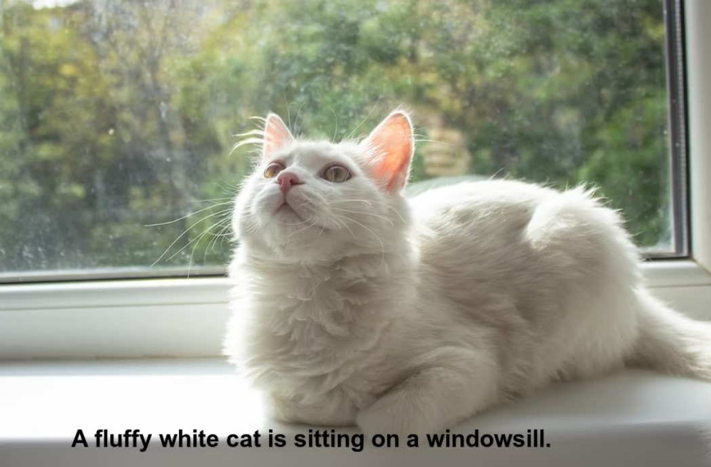
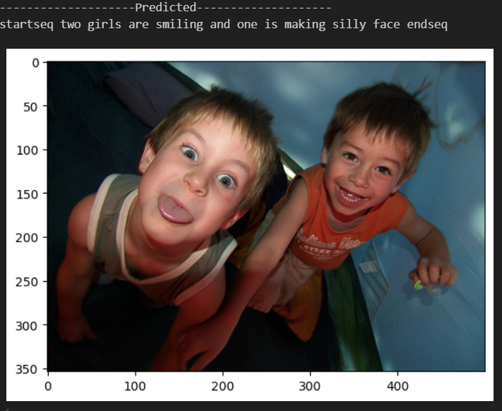
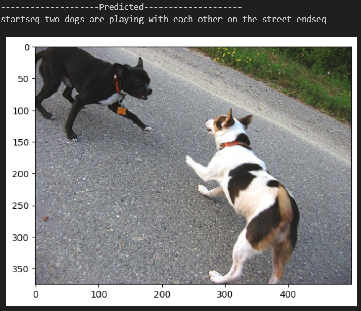

Anagha Hanagal Manjunutha, Apoorva Chavali and Srinidhi Amuri Fall 2024 ECE 4554/5554 Computer Vision: Course Project Virginia Tech
Abstract
Image caption generation [1] is a fundamental task at the intersection of computer vision and natural language processing, aimed at generating coherent textual descriptions of visual content. Recent advancements in deep learning have significantly enhanced the ability to capture complex relationships between visual and textual modalities. This work presents a multimodal architecture for image caption generation, combining visual and textual modalities. Visual features, extracted using a ResNet50 [2], are processed through dense layers, while captions are encoded using an embedding layer and LSTM network. The results describe the content of the image accurately, identifying key objects and their relationships.
Teaser figure
Turning photos into words: check out a sneak peek of our image caption generator!!

**This example image is not generated by our model.
Introduction
Image data analytics involves systems that automatically analyze and interpret visual content, converting it into natural language. This technology has diverse applications, such as assisting the visually impaired by describing surroundings, supporting content creators with automated tagging and categorization, enhancing security through automated surveillance, and aiding healthcare by analyzing diagnostic images. It also benefits e-commerce with visual search and product recognition. By combining computer vision, machine learning, and natural language processing, these systems unlock new possibilities for accessibility, creativity, safety, and efficiency, transforming how we interact with and understand visual data across various sectors and industries. This task aims at bridging the gap between natural language processing and computer vision. In the pre-deep learning era, hand-crafted features, such as the Scale-Invariant Feature Transform (SIFT) and Histogram of Oriented Gradients (HOG), were used to extract image features and language models relied on traditional NLP techniques like n-grams or hidden Markov models. Convolutional Neural Networks (CNNs) [3] revolutionized feature extraction in images, enabling systems to recognize objects, scenes, and attributes with greater accuracy. Recurrent Neural Networks (RNNs), especially Long Short-Term Memory (LSTM) [4] networks, advanced sequential data processing for text generation. Combined models, such as Encoder-Decoder frameworks, became the foundation for modern image caption generators:
Encoder: CNN extracts image features.
Decoder: RNN generates a caption based on those features. [5]
Later, incorporated attention mechanisms, allowing the model to focus on relevant parts of the image while generating captions. Improved accuracy and interpretability. More recent advances, such as the Transformer architecture and models like CLIP, ViLT, and BLIP, have significantly improved multimodal understanding. These models leverage large-scale datasets and attention mechanisms for robust and contextual caption generation. The problem of image caption generation is a cornerstone of multimodal AI, aiming to replicate human-like understanding and communication of visual content. It has evolved from rule-based methods to powerful neural architectures that drive real-world applications and continue to inspire new research directions.
Approach
We used the Flickr8k [6] dataset, a popular dataset for image caption generation, that has images from various scenes. We based our code on a similar architecture found in existing implementations, where DenseNet201 [7] was used as the CNN model. In our case, we opted for ResNet50 as the CNN due to its efficiency and fewer parameters. Upon comparison, we found that both architectures perform similarly in terms of accuracy. Therefore, ResNet50 proves to be a viable choice when GPU resources are limited, as it requires fewer parameters to learn. The embedding layer takes word indices (integers representing words in the vocabulary) as input. It outputs dense vectors of fixed size (e.g., 256-dimensional), where each vector corresponds to a word in the vocabulary.The embedding matrix (of size vocab_size × embedding_dim) is a learned parameter during training, allowing the model to optimize the word representations based on the task. We also added an LSTM layer to capture contextual information from the sequence. Then we have written a function that iteratively predicts the next word in a caption sequence for a given image until a stopping condition is met.
Dataset
Flickr8k is a widely-used dataset in image captioning research, consisting of images paired with textual descriptions. It serves as a benchmark dataset to evaluate models' ability to generate coherent and contextually relevant captions for visual content. 90% of the images are allocated for training. 10% are allocated for testing. No validation set is created due to the limited dataset size.
Dataset Composition:
Images: It contains 8,000 images sourced from the Flickr photo-sharing platform.
Captions: Each image is annotated with five descriptive captions, written by humans. These captions describe the image content and vary slightly to capture diverse linguistic expressions.
Image Characteristics:
The images cover a wide range of real-world scenarios, including people, animals, objects, and actions.
The diversity in content makes it challenging and suitable for training and evaluating captioning models.
PreProcessing
Caption Preprocessing:
Convert to lowercase to standardize and remove unwanted characters (e.g., non-alphabetic) using a regex.
Remove extra spaces using \s+.
Add special tokens startseq and endseq to each caption to mark the beginning and end of a sequence.
Remove short words (length ≤ 1) to reduce noise
Image Preprocessing:
Images were resized to 224x224 and normalized to a range of [0, 1]. Features were extracted using a pretrained ResNet50 model, with the output layer set to the second-to-last layer (2048-dimensional features).
Text tokenization
Tokenizer Initialization: A Tokenizer is initialized to handle text tokenization.
Building Vocabulary: word-index mapping (each unique word gets a unique integer ID) is implemented
Vocabulary Size: The total vocabulary size is calculated, including a padding index.
Feature Extraction
Image features were extracted using ResNet50 and stored in a dictionary for fast retrieval during training.
Model details
Encoder-Decoder Architecture
Image Encoder:
Pre-extracted image features of size 2048 are passed through a dropout layer with a rate of 0.4, followed by a dense layer with 256 units and ReLU activation. This module reduces the dimensionality and transforms the image features into a compact representation suitable for fusion with textual features.
Text Sequence Processor:
Tokenized caption sequences of maximum length L are passed through an embedding layer, which maps each token to a 256-dimensional dense vector. The embedding layer is configured with mask_zero=True to ignore padding tokens during processing. The embeddings are regularized using a dropout layer with a rate of 0.4, followed by an LSTM layer with 256 units, which captures the sequential dependencies of the caption.
Feature Fusion:
The outputs of the image feature extractor and text sequence processor are combined using an element-wise addition operation. This fusion layer aligns the multimodal features into a shared representation space.
Decoder:
The fused features are passed through a dense layer with 256 units and ReLU activation to further refine the combined representation. The output layer, a fully connected dense layer with softmax activation, predicts the next word in the caption sequence. The number of units in the output layer is equal to the vocabulary size, enabling the model to output a probability distribution over all possible words.
Training objective:
The model is trained using the categorical cross-entropy loss function, which measures the divergence between the predicted and true word distributions. The Adam optimizer is employed for efficient parameter updates.
Mathematical Model
The following equations represent the core components of our model:
\( x - 1 = \text{CNN}(I) \): This equation represents the process of extracting features from an image I using a Convolutional Neural Network (CNN). The CNN outputs feature vectors x-1 that capture the visual content of the image.
\( x_t = W_e S_t, \ t \in \{ 0 \ldots N - 1 \} \): This equation shows the generation of word embeddings for each word \(S_t \) in the caption sequence. Each word \(S_t \) is mapped to its corresponding embedding vector \(x_t \), using a weight matrix \(W_e \), for each time step t from 0 to N-1, where N is the sequence length.
\( p_{t+1} = \text{LSTM}(x_t), \ t \in \{ 0 \ldots N - 1 \} \): This equation describes the process of generating the next word \( p_{t+1}\) in the caption sequence. The LSTM (Long Short-Term Memory) network takes the word embeddings \( x_t\)at each time step t to predict the next word in the sequence, capturing temporal dependencies in the caption.
These equations describe the internal workings of the LSTM unit used in our model for generating captions.
\(
i_t = \sigma(W_{ix} x_t + W_{im} m_{t-1})
\): The input gate \(i_t\) decides how much of the new input \(x_t\) should be stored in the cell state.
\(
f_t = \sigma(W_{fx} x_t + W_{fm} m_{t-1})
\): The forget gate \(f_t\) determines how much of the previous cell state \(c_{t-1}\) should be discarded.
\(
o_t = \sigma(W_{ox} x_t + W_{om} m_{t-1})
\): The output gate \(o_t\) controls how much of the cell state \(c_t \)should be exposed to the output.
\(
c_t = f_t \odot c_{t-1} + i_t \odot h(W_{cx} x_t + W_{cm} m_{t-1})
\): The cell state \(c_t \) is updated by combining the previous cell state \(c_{t-1}\) and the new input, weighted by the forget and input gates.
\(
m_t = o_t \odot c_t
\): The memory \(m_t \) is produced by applying the output gate to the updated cell state.
\(
p_{t+1} = \text{Softmax}(m_t)
\): The predicted output \(p_{t+1}\) is obtained by applying the Softmax function to the memory vector \(m_{t}\), converting it into a probability distribution.
Where:
\(i_t\): Input gate at time step t
\(f_t\): Forget gate at time step t
\(o_t\): Output gate at time step t
\(c_t\): Cell state at time step t
\(m_t\): Memory at time step t
\(p_{t+1}\): Predicted output for the next word
\(\sigma:\) Sigmoid activation function
\(h(\cdot)\): Tanh activation function
\(\odot:\) Element-wise multiplication
Experiments and Results
Experiment with CNN: We experimented with 2 different models, VGG16 and Resnet50, to see how the number of parameters affect feature extraction. We found that Resnet50 showed better qualitative results and a lower training loss. We also identified that Resnet50 was performing better in preserving spatial details. ResNet50 produces more diverse, compact, and detailed features, making it more robust for complex image-captioning tasks.
Experiment with Embedding Matrix: We compared the performance of a randomly initialized embedding layer and pre-trained GloVe embeddings (300D) for text sequence processing. Surprisingly, the model using the embedding layer showed significantly lower training loss compared to the model utilizing GloVe embeddings. The randomly initialized embedding layer was trained specifically on the Flickr8k dataset. This allowed it to learn task-specific word representations tailored to the dataset's context and vocabulary. GloVe embeddings, pre-trained on large corpora like Wikipedia or Common Crawl, represent general-purpose semantic relationships. These relationships might not align perfectly with the domain-specific context of Flickr8k captions (e.g., words like "dog," "frisbee," or "park" have a particular relevance in this dataset). GloVe embeddings could not adapt dynamically to the model's needs during training, had vocabulary coverage gaps and mismatched context.
Results using BLEU score - A BLEU (BiLingual Evaluation Understudy) score is a metric that measures the similarity between a machine-translated text and a set of reference translations. The BLEU algorithm compares consecutive phrases in the translation to the reference translation, counting matches in a weighted fashion. The score is based on the number of words that overlap, with sequential words receiving higher scores. The results of our BLEU scores are mentioned below:
BLEU-1 (0.54): This measures the unigram overlap (single words) between your generated captions and the reference captions. A score around 0.54 is decent for image captioning tasks.
BLEU-2 (0.37): This measures the bigram overlap (two consecutive words) and is generally lower since it captures more contextual information.
Architecture
BLEU-1 Score
BLEU-2 Score
CNN-LSTM with GloVe Embeddings
0.097096
0.013644
CNN-LSTM without GloVe Embeddings
0.588916
0.376908


Qualitative Analysis:
Captions generated for validation images often described activities, objects, and scenes accurately. Example: Input Image: A dog jumping into a pool. Generated Caption: "startseq a dog is jumping into a swimming pool endseq" Ground Truth: "a dog jumps into the water during a sunny day"
Error Cases:
Generated captions sometimes missed specific objects or used incorrect terms, e.g., mistaking "a cat" for "a dog" due to similar pose and color.
Parameter Tuning
Batch Size: 32 was optimal; increasing it led to GPU memory issues, while smaller sizes resulted in slower convergence Rate: Experimented with 0.3, 0.5, and 0.7; 0.5 provided the best generalization.
In general our results are competent with the state of art models that have a transformer based architecture. Transformers excel with diverse and large datasets, leveraging their ability to capture global dependencies. Here considering various factors like the size of our dataset, computational resources available to us and the simplicity of the task we implemented a CNN-LSTM architecture. As indicated by the BLEU1 and BLEU2 scores our model is performing very well. For larger datasets or tasks requiring highly fluent and contextually rich captions, transformer-based architectures would generally outperform. Starting with a CNN-LSTM provides a solid baseline. Once this is optimized, we can transition to transformer-based models for comparison and enhancement.
Conclusion
This project investigated a model that combines Convolutional Neural Networks (CNN) and Long Short-Term Memory networks (LSTM) to generate captions for images. The CNN handles visual feature extraction, while the LSTM is responsible for generating language sequences. The model performed well on the Flickr8k dataset, showing solid BLEU-1 and BLEU-2 scores, indicating its ability to understand basic object-context relationships and produce coherent captions. Using an embedding layer for text features helped optimize the model for this specific task, outperforming pre-trained embeddings.
Although transformer-based models currently lead the field in image captioning due to their strong performance, they require substantial computational power and large datasets like MS COCO. In contrast, CNN-LSTM models offer a practical solution for smaller datasets, as demonstrated in this work. This highlights the need to match the complexity of the model with the size of the dataset and available computational resources. Future research could explore adding attention mechanisms or moving toward transformer-based models with pre-trained embeddings to improve fluency and contextual accuracy. This work sets the stage for further improvements and more sophisticated image captioning systems.
References
[1] Karpathy, Andrej, and Li Fei-Fei. "Deep visual-semantic alignments for generating image descriptions." Proceedings of the IEEE conference on computer vision and pattern recognition. 2015.
[2] He, Kaiming, et al. "Deep residual learning for image recognition." Proceedings of the IEEE conference on computer vision and pattern recognition. 2016.
[3] Simonyan, Karen, and Andrew Zisserman. "Very deep convolutional networks for large-scale image recognition." arXiv preprint arXiv:1409.1556 (2014).
[4] Sherstinsky, Alex. "Fundamentals of recurrent neural network (RNN) and long short-term memory (LSTM) network." Physica D: Nonlinear Phenomena 404 (2020): 132306.
[5] Vinyals, Oriol, et al. "Show and tell: A neural image caption generator." Proceedings of the IEEE conference on computer vision and pattern recognition. 2015.
[6] Hodosh, Micah, Peter Young, and Julia Hockenmaier. "Framing image description as a ranking task: Data, models and evaluation metrics." Journal of Artificial Intelligence Research 47 (2013): 853-899.
[7] Huang, Gao, et al. "Densely connected convolutional networks." Proceedings of the IEEE conference on computer vision and pattern recognition. 2017.